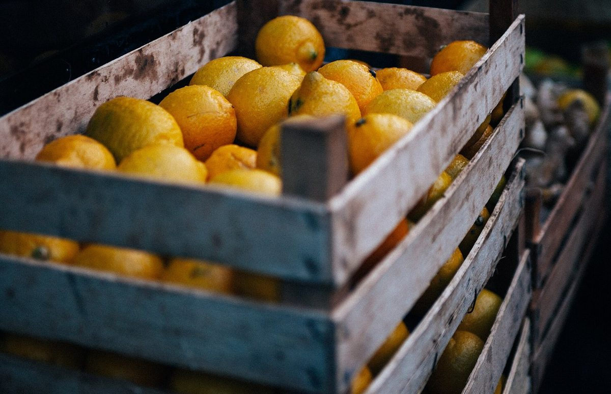

店のこと
店のこと
お店について確認できているのは、所在地・電話番号・Instagramのアカウントです。
このページの「想像してみる」部分は、制作側が想像して書いたものです。お店の実際の様子・考え・メニューとは関係がありません。
確認できていること
- 店名は「カフェ ミシュンズ」、業種はカフェ
- 所在地は長野県諏訪市中洲神宮寺２３１−５(〒392-0015)
- 電話番号は 0266-53-3533
- Instagramは @cafe.mishuns
- 営業時間・定休日・メニュー・価格・ご予約・駐車場は準備中

想像してみる
「ミシュンズ」という名前から
由来は分かりません。制作側は、語尾の「ズ」を英語の複数形の「s」に見立てて、ひとつのものが仲間と出会って複数になる、という遊びを思いつきました。たとえば一粒のブルーベリーが集まると「berries」になります。制作側の連想にすぎず、お店の理念・由来とは無関係で、お店の姿や考えを説明するものでもありません。


語尾のsのきまり(英語の豆知識)
sのつけかた、すこしだけ。
- cup → cupsふつうは、そのままsをつける
- berry → berriesyで終わる語は、yをiに変えてes
- apple → applesふたつ以上になったらs
英語の一般的な規則の紹介で、お店の内容を示すものではありません。